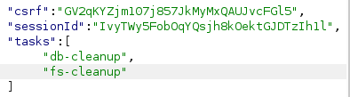

Remote code execution via server-side prototype pollution
- Provided with storefront website, told to use prototype pollution to delete file through RCE, provided credentials “wiener:peter”
- Logged in using provided credentials
- Intercepted billing and delivery address update request using burpsuite
- Noticed JSON in request
- Appended “foo”:"bar" as test
- Noticed response included test parameter entered
- Tried “__proto__”:{"json spaces":10}
- Raw response contained new spacing proving pollution possible
- Navigated to admin panel
- Interecepted run maintenance jobs request in burpsuite
- Noticed potential use of execArgv in tasks parameter:

- In orginal intercepted request tried “__proto__”:{"execArgv":["--env=require('child_process').execSync('rm /home/carlos/morale.txt')"]}
- Successfully deleted file and completed lab: